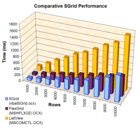
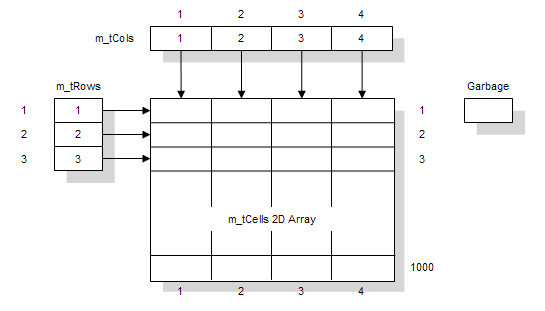
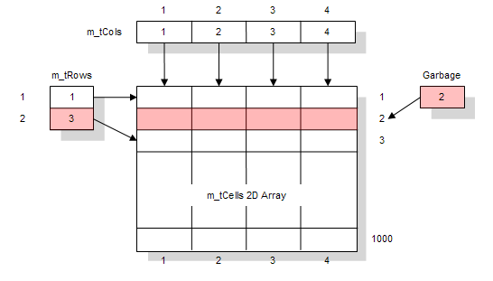
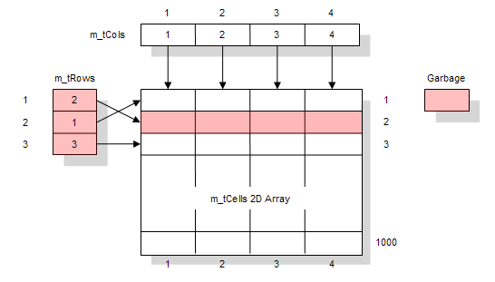

VB5 SGrid 2 Performance Test (24K)
VB5 SGrid 2 Performance Test (24K)
 VB6 SGrid 2 Performance Test (22K)
VB6 SGrid 2 Performance Test (22K)
 25 Jan 2004
25 Jan 2004
First Posted

SGrid 2.0 Performance
This article provides some information on how the performance of S-Grid 2.0 is achieved and compares performance relative to the Microsoft Hierarchical FlexGrid and ListView controls.
Achieving Performance in SGrid 2.0
Introduction
The main problem that occurred when trying to add drag and drop hierarchical grouping to SGrid was around performance. The design aim was for a grid that would cope with at least 5000 records and still return acceptable grouping performance. In the SGrid hierarchical grouping implementation, adding a group means inserting a row into the grid. Likewise removing a group means deleting the group row back out again. Consequently, the grid's performance around inserting and deleting rows had to be good.
In SGrid 1, good performance was obtained when adding and deleting rows at the end of the grid. However, insertion and deletion from the start could be very slow. The reason for this was down to the way the grid maintained the data associated with the cells. If you wanted to insert a row, it was necessary to shift all of the data below that row down one to fit the new data in. Likewise to delete a row meant shifting all the grid data up. Once grouping was added to SGrid, it started performing rather like the author; it was capable of a limited number of things quite quickly but others were clearly unreasonably sluggish. When grouping on a 10,000 row grid, there was pretty much enough time to get a game of Solitaire in.
{kind=link}
SGrid 1 already had one trick to improve speed for column handling: indirection. When you refer to a column in SGrid, you refer to the physical index of the column within the data array. Re-ordering the columns does not affect the actual data; instead there is an internal array of columns which contains a pointer to the correct index in the data array. After many days of sluggish thought I finally realised that the key to improving the grouping, insert and delete performance was to apply the same strategy to the rows as well.
Row Indirection - How It Works
The following diagrams show how row indirection works within SGrid 2.0.
Initial State
For the example, assume a grid has been set up with the Rows property set to 1,000 (causing it to pre-allocate 1,000 grid cells) and three rows have been added to it.
Initial State with 1,000 rows allocated and 3 Rows Added.
Deleting Row 2
When you delete row 2, SGrid does not update the internal array. It simply modifies the m_tRows array to remove the item pointing to the grid cells with row 2, and adds row index 2 to the garbage collection.
Internal state after deleting row 2.
Inserting At Row 1
If you now insert at Row 1, SGrid identifies that there is a free row by popping the top item off the garbage stack (if the garbage stack is empty, the next available row is used). Therefore it chooses that as the location for the inserted data. The existing two rows of the m_tRows are shifted down and the new row pointer is inserted at index 1.
Internal state after inserting at row 1.
Note that the m_tRows array still has to be manipulated. The S-Grid 2 code uses CopyMemory to shift multiple m_tRow data items in a single call, hence improving performance. Shifting this array around is normally going to be quicker than shifting the cells array around as this is a 1-D array. The only time it might not be is in a grid with a single column; in that case the performance would be pretty much the same.
Column indirection works in a similar way except that the grid does not currently have a garbage stack for columns, because it is assumed that the number of columns will remain similar over time. Adding a garbage stack for columns would make the grid operate a bit more like Excel.
Some Consequences of Row Indirection
One consequence of row indirection is that memory usage may be increased. If you allocate 1,000 rows in the grid, and then delete ten, the grid still holds memory for 1,000 rows, whereas previously the grid would hold 990 rows. This is almost always a good trade-off, and in fact the code takes advantage of the indirection feature to allocate cell memory in blocks of 100 rows which greatly improves allocation performance. If you desparately need to reclaim memory in the grid, the Clear method is the only way to remove it (theoretically there could also be a Compact method which went through the array and compacted out any spaces, but this is not implemented).
The second consequence is that it is not longer necessary to move grid data around when sorting: all that needs to be changed is the pointer to the row in the m_tRows array. This means that sorting can now be performed many times quicker than with the previous grid which had to copy cell data around.
Detailed Results
The tests shown below were run on an Athlon XP 2.0 system with 512Mb RAM using the code in the download. All times are given in milliseconds and timing accuracy is of the order 1-2 ms. As with all performance tests, you should verify these resuls with your own tests to be certain they are appropriate to your particular scenario.
The results demonstrate that SGrid 2.0 performs well. The only area where there is underperformance is for row insert compared to a ListView control. However note that the control is quicker for the other operations.
Append Rows Performance Results
In the Append Rows test, rows are added to the end of the grid. Where possible (for SGrid and the Hierachical Flex Grid) the rows are preallocated before setting the data.
| Rows | Flex Grid (MSHFLXGD.OCX) | ListView (MSCOMCTL.OCX) | SGrid 2.0 (vbalSGrid.OCX) |
| 1000 | 68 | 136 | 69 |
| 2000 | 134 | 291 | 127 |
| 3000 | 204 | 420 | 189 |
| 4000 | 289 | 574 | 252 |
| 5000 | 383 | 709 | 324 |
| 6000 | 481 | 841 | 409 |
| 7000 | 547 | 1004 | 504 |
| 8000 | 632 | 1176 | 573 |
| 9000 | 691 | 1300 | 633 |
| 10000 | 765 | 1428 | 696 |
Insert Rows
The insert rows test simulates inserting a number of rows at the first position in the grid.
| Rows | Flex Grid (MSHFLXGD.OCX) | ListView (MSCOMCTL.OCX) | SGrid 2.0 (vbalSGrid.OCX) |
| 1000 | 150 | 140 | 104 |
| 2000 | 447 | 290 | 259 |
| 3000 | 924 | 432 | 466 |
| 4000 | 1568 | 580 | 769 |
| 5000 | 2428 | 710 | 1165 |
| 6000 | 3390 | 853 | 1822 |
| 7000 | 4533 | 1027 | 2116 |
| 8000 | 5853 | 1176 | 2546 |
| 9000 | 7355 | 1294 | 3540 |
| 10000 | 9067 | 1417 | 4036 |
Delete All Rows Starting With Last
This test deletes rows starting at the last row and working back to the first until there are no rows in the grid (except for the Hierchical Flex Grid, which does not allow the first row to be deleted).
| Rows | Flex Grid (MSHFLXGD.OCX) | ListView (MSCOMCTL.OCX) | SGrid 2.0 (vbalSGrid.OCX) |
| 1000 | 77 | 22 | 21 |
| 2000 | 294 | 50 | 47 |
| 3000 | 628 | 85 | 64 |
| 4000 | 1109 | 125 | 91 |
| 5000 | 1713 | 188 | 118 |
| 6000 | 2448 | 234 | 141 |
| 7000 | 3334 | 294 | 156 |
| 8000 | 4340 | 373 | 183 |
| 9000 | 5511 | 453 | 208 |
| 10000 | 6815 | 522 | 234 |
Delete All Rows Starting At First
This test deletes the first row from the grid until there are no rows left (except in the Hierarchical Flex Grid, where one row must be left in the grid).
| Rows | Flex Grid (MSHFLXGD.OCX) | ListView (MSCOMCTL.OCX) | SGrid 2.0 (vbalSGrid.OCX) |
| 1000 | 78 | 47 | 29 |
| 2000 | 296 | 159 | 76 |
| 3000 | 675 | 577 | 156 |
| 4000 | 1172 | 1402 | 278 |
| 5000 | 1824 | 2538 | 419 |
| 6000 | 2734 | 3956 | 607 |
| 7000 | 3557 | 5571 | 748 |
| 8000 | 4640 | 7409 | 962 |
| 9000 | 5896 | 9539 | 1239 |
| 10000 | 7353 | 11894 | 1784 |